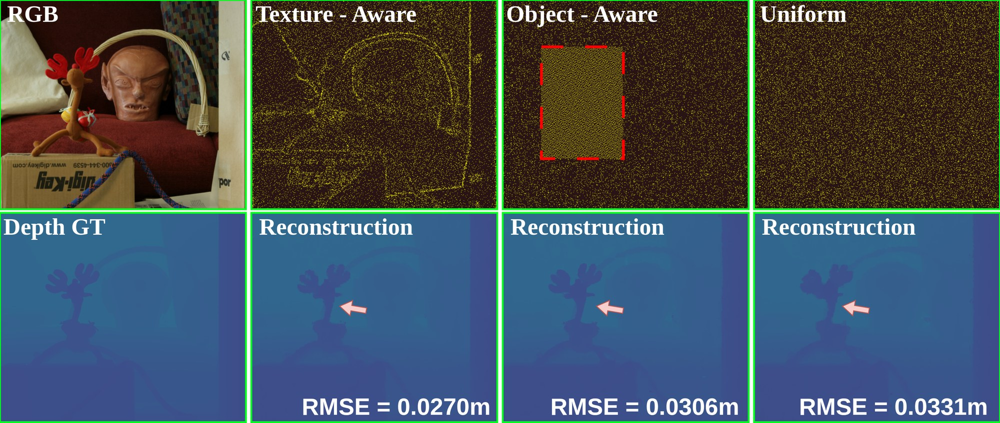
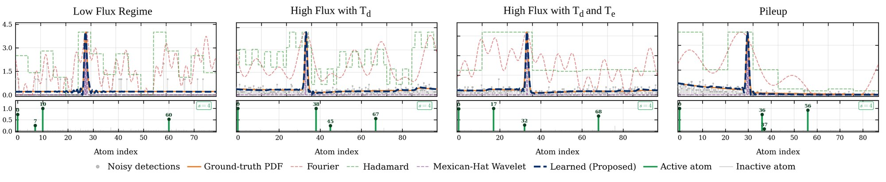
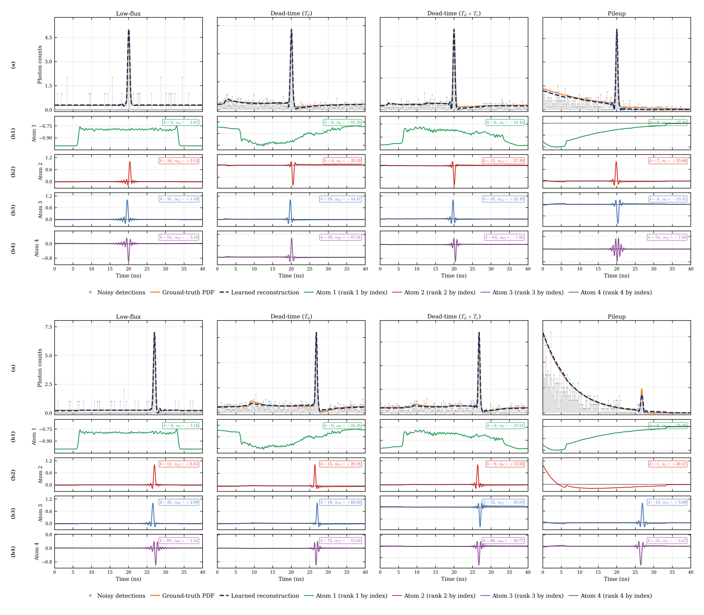
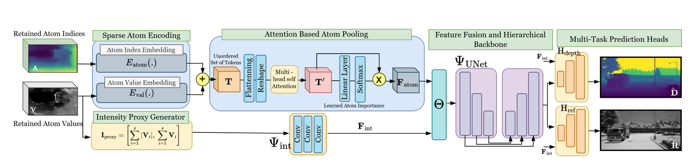

SPARC runs in three stages: RGB-guided spatial acquisition, temporal compression with a pre-learned sparsifying transform, and neural reconstruction. Spatial and temporal compression are applied sequentially to the histogram cube \(\mathcal{H}\), and the resulting sparse payload \(\mathcal{P}\) is decoded straight into the scene estimate \(\hat{\mathcal{S}}\) — a pair of joint depth and reflectivity maps.
Spatial Compression via RGB-Guided Sampling
Neighboring pixels have highly correlated temporal responses, so spreading a fixed photon budget uniformly is wasteful. SPARC uses an RGB image captured before acquisition to estimate a spatial importance \(I(u,v) \ge 0\), sampling pixel \((u,v)\) with probability \(p(u,v) = I(u,v) / \sum_{u,v} I(u,v)\). Only sampled locations are measured, so the dense cube is never formed — compression happens at the sensing stage. Two strategies are supported: texture-aware sampling, \(I_{\text{tex}} = \alpha_g G + \alpha_v V\) from gradient magnitude and local intensity variance, which preserves object boundaries and fine structure; and object-aware sampling, which reserves part of the budget for detector bounding boxes and is used in the embedded evaluation.

Temporal Compression via a Learned Sparsifying Transform
SPARC treats temporal compression as an explicit sparse-representation problem rather than an end-to-end latent code. A square analysis transform \(\mathbf{W}\) maps each histogram \(\mathbf{y}\) to \(\mathbf{x} = \mathbf{W}\mathbf{y}\), keeping only the \(s \ll N_{\text{bins}}\) largest coefficients via hard thresholding \(\mathcal{T}_s\). Transform and codes are learned jointly by solving \(\min_{\mathbf{W},\mathbf{X}} \|\mathbf{W}\mathbf{Y} - \mathbf{X}\|_F^2 + \lambda_1 \Phi(\mathbf{W})\) subject to \(\|\mathbf{x}_i\|_0 \le s\) for every histogram, with \(\Phi(\mathbf{W}) = \|\mathbf{W}\|_F^2 - \gamma \log\det(\mathbf{W})\) keeping \(\mathbf{W}\) full-rank. Unlike Fourier or wavelet bases, the learned atoms adapt to detector-specific distortions — pile-up, dead-time, low-flux — so \(s = 4\) coefficient–index pairs suffice where fixed bases fail. Atom pruning gives a 10× reduction in dimensionality, and because the transform is learned offline and then held fixed, the payload stays independent of the reconstruction network.


Reconstruction: sparseSPADnet
sparseSPADnet decodes the payload directly from the atom-index tensor \(\mathbf{A}\) and coefficient tensor \(\mathbf{V}\), zero-padded at unsampled locations; trained independently of the transform, it can be replaced without relearning the compression stage. Indices and coefficients carry complementary information, so each is embedded and summed into a token \(\mathbf{T}_i = E_{\text{atom}}(\mathbf{A}_i) + E_{\text{val}}(\mathbf{V}_i)\). Because the retained atoms are unordered, attention-based pooling learns their relative importance and aggregates them into one dense feature. A parallel intensity-proxy branch adds the local intensity cues the atoms lack; the fused features pass through a lightweight U-Net and two task-specific heads for joint depth and reflectivity.
